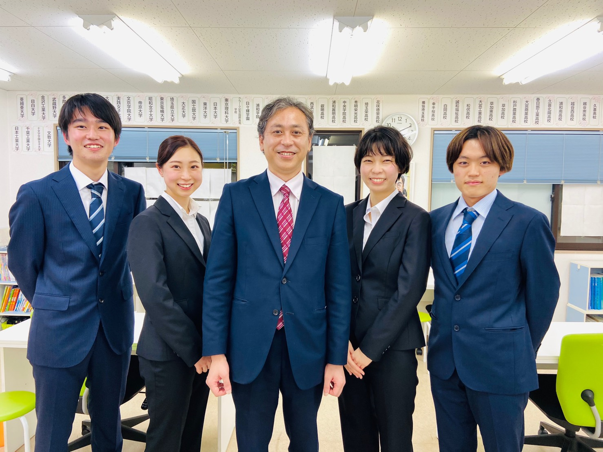

写真準備中
T.K 先生
難関私立大学 在籍
担当：数学・理科
「分かった」だけで終わらせず、「もう一度やってみよう」と思える声かけを大切にしています。
TEACHERS
知識を伝えるだけでなく、行動を引き出すコーチングを大切にしています。年齢の近い講師だからこそ築ける、相談しやすい関係があります。

OUR TEACHERS
難関大学在籍講師
各教科の専門性を持つ講師が、深い理解に基づいた指導を行います。
元塾生講師も多数
かつて教わっていた立場から、今度は教える立場へ。学びの循環が講師の魅力です。
年齢が近く相談しやすい
先生というより、少し先を行く先輩のような距離感で、悩みも相談しやすい関係を築きます。
教科担当制
同じ講師が継続して見るからこそ、学習状況や性格、つまずき方を深く把握できます。
MEMBERS
写真・プロフィールは後日、実際の講師の情報に差し替え予定です。
T.K 先生
難関私立大学 在籍
「分かった」だけで終わらせず、「もう一度やってみよう」と思える声かけを大切にしています。
M.S 先生
国立大学 在籍
単語暗記で止まっている状態から、文章の中で使える英語へ。一緒に一歩ずつ進みます。
R.Y 先生
難関私立大学 在籍（元塾生）
自分自身も生徒として通っていたからこそ、つまずく気持ちが分かります。
A.N 先生
国立大学 在籍
知識を丸暗記するのではなく、つながりで理解できるよう、対話を大切にしています。
H.O 先生
難関私立大学 在籍（元塾生）
できなかった問題が解けた瞬間の表情を、一番近くで見られる仕事だと思っています。
Y.I 先生
私立大学 在籍
部活と両立する生徒様も多いので、無理のないペース配分を一緒に考えます。
TEACHING SPIRIT
スマイルスタディの講師は、子どもたちの夢や目標を叶える応援がしたいという想いを共有しています。入塾前の成績に関係なく、可能性を信じて応援する姿勢を大切にしながら、日々の授業に向き合っています。
知識を教えるだけでなく、行動を引き出す。
MEET OUR TEACHERS
お子様との相性も大切な要素です。まずは体験授業で、雰囲気を感じていただければと思います。
講師全員が、お子様の可能性を信じて伴走します。